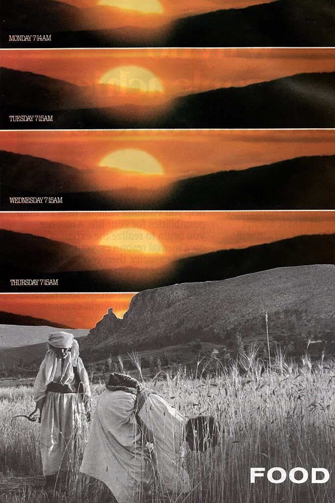
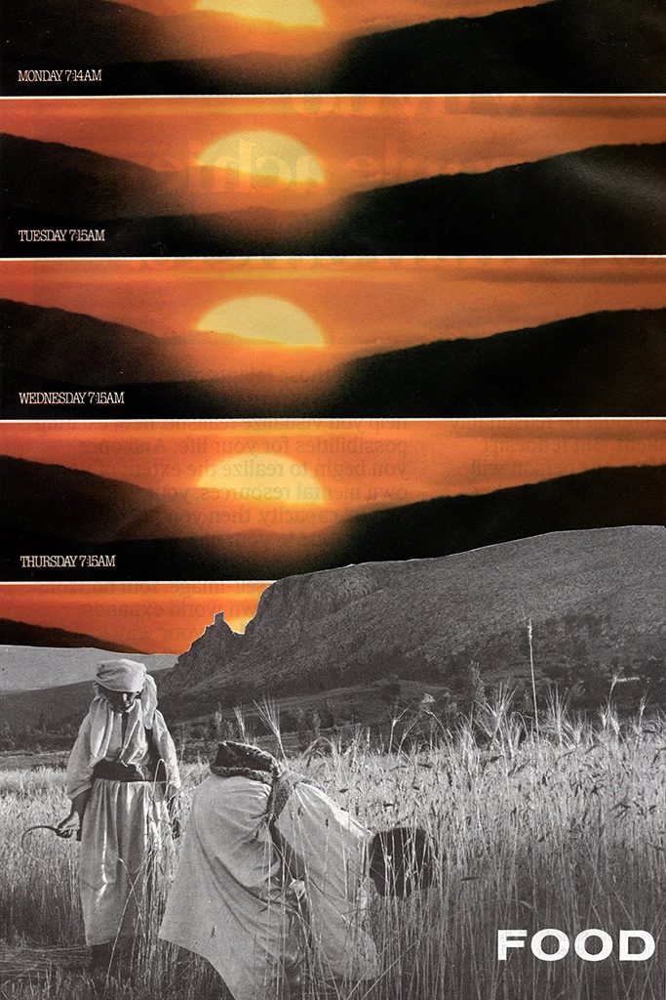

Generative? Poems
Variable Systems Website / work in progress / 2022
Ed Brown Interview
Interview print and publication / 2022


Playlist Covers
Cover art for my Spotify playlists / 2022 – Present

Crosswalk Poetics
Mapping group project / 2021


Digital Overprint
Print and scan feedback experiment / 2021

Acetate Melt
Experimentation with rubbing alcohol & acetate prints / 2021
Homo Deus
Print & web publication project / 2021
Ruotuväki
Conscript Graphic Designer / 2020 — 2021
 
